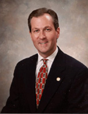
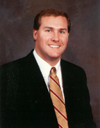
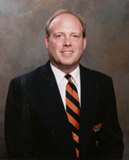
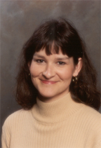
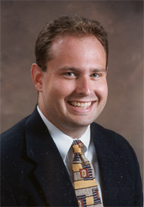

| 
Mike Hubbard, President
Mail: hubbard@aunetwork.com
Mike Hubbard serves as President of Auburn Network, Inc. A 1983
broadcast journalism graduate of the University of Georgia, Hubbard
joined the Auburn Athletic Department staff in January 1984 and
served six years as Associate Sports Information Director prior
to joining the network.
During his career in athletics, Hubbard has worked closely with
two Heisman Trophy winners - Herschel Walker at Georgia and Bo
Jackson at Auburn. While at Georgia, he spearheaded the publicity
campaign which resulted in Terry Hoage, his college roommate,
finishing fifth in the 1983 Heisman balloting.
During his network career, Hubbard has produced and narrated
a number of award-winning Auburn Football video productions, and
his voice is heard on numerous network radio and television productions.
In November 1998, Hubbard was elected to the Alabama House of
Representatives. Rep. Hubbard, a Republican, represents District
79 which includes portions of Auburn and Opelika.
Hubbard's wife, Dr. Susan Hubbard, is a faculty member in Auburn
University's School of Human Sciences. They have one son, Clayte,
born August 29, 1995.
|
| 
Jon Cole, Vice President/General Manager
Mail: jcole@aunetwork.com
Jon Cole, the Auburn Network's Vice President for Sales and Production,
has been with the network since 1990. Cole, an Auburn graduate,
produces all of the network's radio broadcasts, oversees all television
production and publishing activities and directs the network's
overall sales efforts. During his college career, he was a student
assistant in Auburn's Sports Information Office and also worked
for ABC-TV in 1989 on the PGA golf series. Cole's wife, Lisa,
is a conference facilitator for the Auburn University Hotel and
Conference Center. They have one daughter, Alison.
|
| 
Rod Bramblett, Director of Broadcast Services
Mail: bramblet@aunetwork.com
As Director of Broadcast Services, Bramblett is responsible for
coordination of all network broadcast productions and projects.
He also directs the network's affiliate relations efforts with
the over 70 radio stations and oversees the activities of the
network's state-of-the-art production studio. Rod hosts the network's
weekly call-in show Tiger Talk. Bramblett is a familiar
voice to Auburn Network listeners as he serves as the lead play-by-play
announcer for all Auburn Tiger baseball radio broadcasts and studio
host for the network's men's basketball broadcasts. A 1988 Auburn
graduate, Bramblett grew up in Valley, AL. His wife, Paula, is
a computer programmer/analyst in Auburn University's Division
of Computing. They have one daughter, Shelby.
|
|
Brad Harris, Webmaster
Mail: bharris@aunetwork.com
Brad Harris coordinates development and maintenance of the Auburn Network's website and handles studio production duties for Auburn Network football broadcasts. Harris, originally from Lithia Springs, GA, is a 1999 graduate of Auburn University with a degree in Public Relations.
|
| 
Tracy Ledbetter, Receptionist
Mail: ledbetter@aunetwork.com
Tracy Ledbetter serves as receptionist for Auburn Network. She
is responsible for maintaining all office operations and directing
information appropriately. Ledbetter also acts as affidavit manager
for WANI as well as assistant to Rep. Hubbard concerning various
legislative correspondences. A native of Alexander City, she is
married to Eddie, who is employed by Uniroyal.
|
|
Evie Simpkins, Director of Administration & Merchandise
Mail: simpkins@aunetwork.com
Evie Simpkins, a native of Eufaula, AL, is the network's Director
of Merchandising and is responsible for the coordination of the
company's diverse merchandising activities and new product development.
Simpkins, a former educator, served as a speech pathologist and
learning disabilities teacher for seven years prior to joining
the network. She is a 1989 Auburn graduate and earned a Master's
degree in 1992, also from Auburn. Simpkins serves on the board
of directors of the Lee County Auburn Club.
|

Patrick Tisdale, Assistant Engineer
Mail: tisdale@aunetwork.com
Patrick Tisdale serves as Assistant Engineer for the Auburn Network.
His responsibilities include acting as a studio engineer for basketball,
baseball and Tiger Talk broadcasts as well as on-site engineer
for football broadcasts. Originally from Opp, AL, Tisdale is currently
pursuing a degree from Auburn University in physics.
|
| 
Steve Witten, Director of Marketing
Mail: witten@aunetwork.com
Steve Witten is the Auburn Network's Director of Marketing and
is responsible for media sales and event sponsorships, as well
as development and implementation of all marketing efforts. Witten
earned his bachelor's degree from Clemson University and a master's
degree from Ohio University. Prior to joining the Auburn Network,
Witten served as Director of Marketing and Promotions for the
Georgia Southern University Athletic Department. His wife, Beth,
is a customer service manager for McClendon Trucking in LaFayette,
Alabama.
|
| For information on Auburn Network talent, refer to the personalities
page of our web site. |
|

© 2000 Auburn Network, Inc
|
|
Last updated Friday, 25-Aug-2000 12:12:14 CDT
|